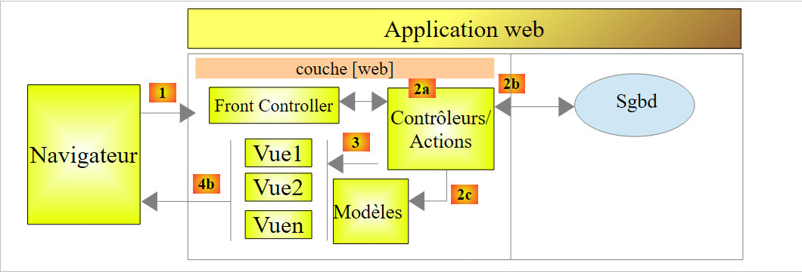

16. Einführung in Spring MVC
16.1. Die Rolle von Spring MVC in einer Webanwendung
Betrachten wir Spring MVC im Kontext der Entwicklung einer Webanwendung. Meistens basiert diese auf einer mehrschichtigen Architektur wie der folgenden:
 |
- Die Schicht [Web] ist die Schicht, die mit dem Benutzer der Webanwendung in Kontakt steht. Dieser interagiert mit der Webanwendung über Webseiten, die in einem Browser angezeigt werden. In dieser Schicht befindet sich Spring MVC und ausschließlich in dieser Schicht;
- Die Schicht [métier] implementiert die Geschäftsregeln der Anwendung, wie beispielsweise die Berechnung eines Gehalts oder einer Rechnung. Diese Schicht nutzt Daten, die vom Benutzer über die Schicht [Web] und von SGBD über die Schicht [DAO] bereitgestellt werden;
- die Schicht [DAO] (Data Access Objects), die Schicht [ORM] (Object Relational Mapper) und der Treiber JDBC verwalten den Zugriff auf die Daten der Schicht SGBD. Die Schicht [ORM] bildet eine Brücke zwischen den von der Schicht [DAO] verarbeiteten Objekten und den Zeilen und Spalten der Tabellen einer relationalen Datenbank. Eine Spezifikation namens JPA (Java Persistence API) ermöglicht es, sich von der verwendeten ORM-Schicht zu abstrahieren, sofern diese die genannten Spezifikationen implementiert. Dies wird in diesem Tutorial der Fall sein, und wir werden daher fortan die ORM-Schicht als JPA-Schicht bezeichnen;
- die Integration der Schichten erfolgt durch das Spring-Framework;
16.2. Das Entwicklungsmodell von Spring MVC
Spring MVC implementiert das sogenannte MVC-Architekturmodell (Model – View – Controller) wie folgt:
 |
Die Bearbeitung einer Kundenanfrage läuft wie folgt ab:
- Anfrage – die angeforderten URL haben die Form http://machine:port/contexte/Action/param1/param2/....?p1=v1&p2=v2&.... Das [Front Controller] verwendet eine Konfigurationsdatei oder Java-Annotationen, um die Anfrage an den richtigen Controller und die richtige Aktion innerhalb dieses Controllers weiterzuleiten. Dazu nutzt er das Feld [Action] des URL. Der Rest des URL [/param1/param2/...] besteht aus optionalen Parametern, die an die Aktion übergeben werden. Das C von MVC ist hier die Zeichenkette [Front Controller, Contrôleur, Action]. Wenn kein Controller die angeforderte Aktion verarbeiten kann, antwortet der Webserver, dass die angeforderte URL nicht gefunden wurde.
- Verarbeitung
- (Fortsetzung)
- Die ausgewählte Aktion kann die Parameter parami nutzen, die ihr von [Front Controller] übergeben wurden. Diese können aus verschiedenen Quellen stammen:
- aus dem Pfad [/param1/param2/...] des URL,
- aus den Parametern [p1=v1&p2=v2] von URL,
- aus Parametern, die der Browser mit seiner Anfrage übermittelt hat;
- Bei der Bearbeitung der Benutzeranfrage benötigt die Aktion möglicherweise die Schichten [métier] und [2b]. Sobald die Anfrage des Clients bearbeitet wurde, kann diese verschiedene Antworten auslösen. Ein klassisches Beispiel ist:
- eine Fehlerseite, wenn die Anfrage nicht korrekt verarbeitet werden konnte
- ansonsten eine Bestätigungsseite
- die Aktion fordert die Anzeige einer bestimmten Ansicht an: [3]. Diese Ansicht zeigt Daten an, die als Modell der Ansicht bezeichnet werden. Das ist das M in MVC. Die Aktion erstellt dieses Modell M [2c] und fordert eine Ansicht V auf, sich anzuzeigen [3];
- Antwort – die ausgewählte Ansicht V verwendet die von der Aktion erstellte Vorlage M, um die dynamischen Teile der Antwort HTML zu initialisieren, die sie an den Client senden muss, und sendet diese Antwort anschließend.
Bei einem Webservice / jSON wird die vorstehende Architektur leicht modifiziert:
 |
- In [4a] wird das Modell, bei dem es sich um eine Java-Klasse handelt, durch eine Bibliothek jSON in eine Zeichenkette jSON umgewandelt;
- in [4b] wird diese Zeichenfolge jSON an den Browser gesendet;
Lassen Sie uns nun den Zusammenhang zwischen der Webarchitektur MVC und der Schichtenarchitektur näher erläutern. Je nachdem, wie man das Modell definiert, stehen diese beiden Konzepte in einem Zusammenhang oder auch nicht. Nehmen wir eine einschichtige Spring-Webanwendung MVC als Beispiel:
 |
Wenn wir die Schicht [Web] mit Spring MVC implementieren, erhalten wir zwar eine Webarchitektur MVC, jedoch keine mehrschichtige Architektur. Hier übernimmt die Schicht [web] alles: Darstellung, Geschäftslogik, Datenzugriff. Diese Aufgaben werden von den Aktionen übernommen.
Betrachten wir nun eine mehrschichtige Webarchitektur:
 |
Die Schicht [Web] kann ohne Framework und ohne Befolgung des Modells MVC implementiert werden. Man hat dann zwar eine mehrschichtige Architektur, aber die Webschicht implementiert das Modell MVC nicht.
Beispielsweise kann in der Welt .NET die obige Schicht [Web]mit ASP.NET und MVC implementiert werden, und man erhält dann eine Schichtenarchitektur mit einer Schicht [Web] vom Typ MVC. Ist dies geschehen, kann man diese Schicht ASP.NET MVC durch eine klassische Schicht ASP.NET (WebForms) ersetzen, während der Rest (Geschäftslogik, DAO, ORM) unverändert beibehalten. Man erhält somit eine Schichtenarchitektur mit einer Schicht [Web], die nicht mehr vom Typ MVC ist.
In MVC haben wir gesagt, dass das Modell M das der Ansicht V, c.a.d, ist. Die Gesamtheit der von der Ansicht V angezeigten Daten. Eine weitere Definition des Modells M von MVC lautet:
 |
Viele Autoren sind der Ansicht, dass das, was sich rechts von der Ebene [Web] befindet, das Modell M von MVC bildet. Um Mehrdeutigkeiten zu vermeiden, kann man sprechen von:
- vom Domänenmodell, wenn man alles bezeichnet, was sich rechts von der Ebene [Web] befindet
- vom Modell der Ansicht, wenn man die von einer Ansicht V angezeigten Daten bezeichnet
Im Folgenden bezeichnet der Begriff „M-Modell“ ausschließlich das Modell einer Ansicht V.
16.3. Ein Webprojekt / jSON mit Spring MVC
Die Website [http://spring.io/guides] bietet Einführungs-Tutorials, um das Spring-Ökosystem kennenzulernen. Wir werden einem davon folgen, um die für ein Spring-Projekt MVC erforderliche Maven-Konfiguration kennenzulernen.
16.3.1. Das Demonstrationsprojekt
 |
- in [1] importieren wir eine der Spring-Anleitungen;
 |
- in [2] wählen wir das Beispiel [Rest Service] aus;
- in [3] wählen wir das Maven-Projekt aus;
- in [4] wählen wir die endgültige Version der Anleitung;
- in [5] bestätigen wir;
- in [6] das importierte Projekt;
Webdienste, die über Standard-URL erreichbar sind und jSON-Text liefern, werden oft als REST-Dienste (REpresentational State Transfer) bezeichnet. Ein Dienst wird als RESTful bezeichnet, wenn er bestimmte Regeln einhält.
Sehen wir uns nun das importierte Projekt an, zunächst seine Maven-Konfiguration.
16.3.2. Maven-Konfiguration
Die Datei [pom.xml] sieht wie folgt aus:
<?xml version="1.0" encoding="UTF-8"?>
<project xmlns="http://maven.apache.org/POM/4.0.0" xmlns:xsi="http://www.w3.org/2001/XMLSchema-instance"
xsi:schemaLocation="http://maven.apache.org/POM/4.0.0 http://maven.apache.org/xsd/maven-4.0.0.xsd">
<modelVersion>4.0.0</modelVersion>
<groupId>org.springframework</groupId>
<artifactId>gs-rest-service</artifactId>
<version>0.1.0</version>
<parent>
<groupId>org.springframework.boot</groupId>
<artifactId>spring-boot-starter-parent</artifactId>
<version>1.2.2.RELEASE</version>
</parent>
<dependencies>
<dependency>
<groupId>org.springframework.boot</groupId>
<artifactId>spring-boot-starter-web</artifactId>
</dependency>
</dependencies>
<properties>
<start-class>hello.Application</start-class>
</properties>
<build>
<plugins>
<plugin>
<groupId>org.springframework.boot</groupId>
<artifactId>spring-boot-maven-plugin</artifactId>
</plugin>
</plugins>
</build>
<repositories>
<repository>
<id>spring-releases</id>
<url>https://repo.spring.io/libs-release</url>
</repository>
</repositories>
<pluginRepositories>
<pluginRepository>
<id>spring-releases</id>
<url>https://repo.spring.io/libs-release</url>
</pluginRepository>
</pluginRepositories>
</project>
- Zeilen 6–8: die Eigenschaften des Maven-Projekts. Es fehlt ein Tag [<packaging>], das den Typ der durch die Maven-Kompilierung erzeugten Datei angibt. Fehlt dieses Tag, wird der Typ [jar] verwendet. Die Anwendung ist also eine ausführbare Konsolenanwendung und keine Webanwendung, bei der das Packaging dann [war] lauten würde;
- Zeilen 10–14: Das Maven-Projekt hat ein übergeordnetes Projekt mit dem Typ [spring-boot-starter-parent]. Dieses definiert den Großteil der Projektabhängigkeiten. Entweder sind diese ausreichend – in diesem Fall werden keine weiteren hinzugefügt – oder nicht, in welchem Fall die fehlenden Abhängigkeiten hinzugefügt werden;
- Zeilen 17–20: Das Artefakt [spring-boot-starter-web] enthält die Bibliotheken, die für ein Spring-Projekt MVC vom Typ Webservice erforderlich sind, bei dem keine Ansichten generiert werden. Dieses Artefakt enthält eine sehr große Anzahl von Bibliotheken, darunter auch die eines eingebetteten Tomcat-Servers. Auf diesem Server wird die Anwendung ausgeführt;
Die von dieser Konfiguration bereitgestellten Bibliotheken sind sehr zahlreich:
 |  |
Oben sind die drei Archive des Tomcat-Servers zu sehen.
16.3.3. Die Architektur eines Spring-Dienstes [web / jSON]
Für einen Webdienst / jSON implementiert Spring MVC das Modell MVC wie folgt:
 |
- In [4a] wird das Modell, bei dem es sich um eine Java-Klasse handelt, durch eine Bibliothek jSON in die Zeichenkette jSON umgewandelt;
- in [4b] wird diese Zeichenkette jSON an den Browser gesendet;
16.3.4. Der Controller C
 |
Die importierte Anwendung verfügt über den folgenden Controller:
package hello;
import java.util.concurrent.atomic.AtomicLong;
import org.springframework.web.bind.annotation.RequestMapping;
import org.springframework.web.bind.annotation.RequestParam;
import org.springframework.web.bind.annotation.RestController;
@RestController
public class GreetingController {
private static final String template = "Hello, %s!";
private final AtomicLong counter = new AtomicLong();
@RequestMapping("/greeting")
public Greeting greeting(@RequestParam(value = "name", defaultValue = "World") String name) {
return new Greeting(counter.incrementAndGet(), String.format(template, name));
}
}
- Zeile 9: Die Annotation [@RestController] macht die Klasse [GreetingController] zu einem Spring-Controller, d. h., ihre Methoden werden zur Verarbeitung von URL registriert. Wir haben bereits die ähnliche Annotation [@Controller] gesehen. Das Ergebnis der Methoden dieses Controllers war ein Typ [String], der den Namen der anzuzeigenden Ansicht darstellte. Hier ist das anders. Die Methoden eines Controllers vom Typ [@RestController] geben Objekte zurück, die serialisiert werden, um an den Browser gesendet zu werden. Der Typ der durchgeführten Serialisierung hängt von der Spring-Konfiguration MVC ab. Hier werden sie als jSON serialisiert. Das Vorhandensein einer Bibliothek namens jSON in den Projektabhängigkeiten führt dazu, dass Spring Boot das Projekt durch Autokonfiguration auf diese Weise einrichtet;
- Zeile 14: Die Annotation [@RequestMapping] gibt das URL an, das von der Methode verarbeitet wird, in diesem Fall das URL [/greeting];
- Zeile 15: Die Annotation [@RequestParam] haben wir bereits erläutert. Das von der Methode zurückgegebene Ergebnis ist ein Objekt vom Typ [Greeting].
- Zeile 12: Eine atomare Long-Ganzzahl. Das bedeutet, dass sie parallelen Zugriff unterstützt. Mehrere Threads können gleichzeitig versuchen, die Variable [counter] zu inkrementieren. Dies erfolgt korrekt. Ein Thread kann den Wert des Zählers erst lesen, wenn der Thread, der ihn gerade ändert, seine Änderung abgeschlossen hat.
16.3.5. Das Modell M
Das durch die vorherige Methode erzeugte M-Modell ist das folgende Objekt [Greeting]:
 |
package hello;
public class Greeting {
private final long id;
private final String content;
public Greeting(long id, String content) {
this.id = id;
this.content = content;
}
public long getId() {
return id;
}
public String getContent() {
return content;
}
}
Die Umwandlung jSON dieses Objekts erzeugt die Zeichenkette {"id":n,"content":"text"}. Letztendlich hat die von der Controller-Methode erzeugte Zeichenkette jSON folgende Form:
oder
16.3.6. Ausführung
 |
Die Klasse [Application.java] ist die ausführbare Klasse des Projekts. Ihr Code lautet wie folgt:
package hello;
import org.springframework.boot.autoconfigure.EnableAutoConfiguration;
import org.springframework.boot.SpringApplication;
import org.springframework.context.annotation.ComponentScan;
@ComponentScan
@EnableAutoConfiguration
public class Application {
public static void main(String[] args) {
SpringApplication.run(Application.class, args);
}
}
Diesen Code haben wir bereits im vorherigen Beispiel kennengelernt und erläutert. Führen wir das Projekt aus:
 |
Es werden die folgenden Konsolenprotokolle ausgegeben:
. ____ _ __ _ _
/\\ / ___'_ __ _ _(_)_ __ __ _ \ \ \ \
( ( )\___ | '_ | '_| | '_ \/ _` | \ \ \ \
\\/ ___)| |_)| | | | | || (_| | ) ) ) )
' |____| .__|_| |_|_| |_\__, | / / / /
=========|_|==============|___/=/_/_/_/
:: Spring Boot :: (v1.1.9.RELEASE)
2014-11-28 15:22:55.005 INFO 3152 --- [ main] hello.Application : Starting Application on Gportpers3 with PID 3152 (started by ST in D:\data\istia-1415\spring mvc\dvp-final\gs-rest-service)
2014-11-28 15:22:55.046 INFO 3152 --- [ main] ationConfigEmbeddedWebApplicationContext : Refreshing org.springframework.boot.context.embedded.AnnotationConfigEmbeddedWebApplicationContext@62e136d3: startup date [Fri Nov 28 15:22:55 CET 2014]; root of context hierarchy
2014-11-28 15:22:55.762 INFO 3152 --- [ main] o.s.b.f.s.DefaultListableBeanFactory : Overriding bean definition for bean 'beanNameViewResolver': replacing [Root bean: class [null]; scope=; abstract=false; lazyInit=false; autowireMode=3; dependencyCheck=0; autowireCandidate=true; primary=false; factoryBeanName=org.springframework.boot.autoconfigure.web.ErrorMvcAutoConfiguration$WhitelabelErrorViewConfiguration; factoryMethodName=beanNameViewResolver; initMethodName=null; destroyMethodName=(inferred); defined in class path resource [org/springframework/boot/autoconfigure/web/ErrorMvcAutoConfiguration$WhitelabelErrorViewConfiguration.class]] with [Root bean: class [null]; scope=; abstract=false; lazyInit=false; autowireMode=3; dependencyCheck=0; autowireCandidate=true; primary=false; factoryBeanName=org.springframework.boot.autoconfigure.web.WebMvcAutoConfiguration$WebMvcAutoConfigurationAdapter; factoryMethodName=beanNameViewResolver; initMethodName=null; destroyMethodName=(inferred); defined in class path resource [org/springframework/boot/autoconfigure/web/WebMvcAutoConfiguration$WebMvcAutoConfigurationAdapter.class]]
2014-11-28 15:22:56.567 INFO 3152 --- [ main] .t.TomcatEmbeddedServletContainerFactory : Server initialized with port: 8080
2014-11-28 15:22:56.738 INFO 3152 --- [ main] o.apache.catalina.core.StandardService : Starting service Tomcat
2014-11-28 15:22:56.740 INFO 3152 --- [ main] org.apache.catalina.core.StandardEngine : Starting Servlet Engine: Apache Tomcat/7.0.56
2014-11-28 15:22:56.869 INFO 3152 --- [ost-startStop-1] o.a.c.c.C.[Tomcat].[localhost].[/] : Initializing Spring embedded WebApplicationContext
2014-11-28 15:22:56.870 INFO 3152 --- [ost-startStop-1] o.s.web.context.ContextLoader : Root WebApplicationContext: initialization completed in 1827 ms
2014-11-28 15:22:57.478 INFO 3152 --- [ost-startStop-1] o.s.b.c.e.ServletRegistrationBean : Mapping servlet: 'dispatcherServlet' to [/]
2014-11-28 15:22:57.481 INFO 3152 --- [ost-startStop-1] o.s.b.c.embedded.FilterRegistrationBean : Mapping filter: 'hiddenHttpMethodFilter' to: [/*]
2014-11-28 15:22:57.685 INFO 3152 --- [ main] o.s.w.s.handler.SimpleUrlHandlerMapping : Mapped URL path [/**/favicon.ico] onto handler of type [class org.springframework.web.servlet.resource.ResourceHttpRequestHandler]
2014-11-28 15:22:57.879 INFO 3152 --- [ main] s.w.s.m.m.a.RequestMappingHandlerMapping : Mapped "{[/greeting],methods=[],params=[],headers=[],consumes=[],produces=[],custom=[]}" onto public hello.Greeting hello.GreetingController.greeting(java.lang.String)
2014-11-28 15:22:57.884 INFO 3152 --- [ main] s.w.s.m.m.a.RequestMappingHandlerMapping : Mapped "{[/error],methods=[],params=[],headers=[],consumes=[],produces=[],custom=[]}" onto public org.springframework.http.ResponseEntity<java.util.Map<java.lang.String, java.lang.Object>> org.springframework.boot.autoconfigure.web.BasicErrorController.error(javax.servlet.http.HttpServletRequest)
2014-11-28 15:22:57.885 INFO 3152 --- [ main] s.w.s.m.m.a.RequestMappingHandlerMapping : Mapped "{[/error],methods=[],params=[],headers=[],consumes=[],produces=[text/html],custom=[]}" onto public org.springframework.web.servlet.ModelAndView org.springframework.boot.autoconfigure.web.BasicErrorController.errorHtml(javax.servlet.http.HttpServletRequest)
2014-11-28 15:22:57.906 INFO 3152 --- [ main] o.s.w.s.handler.SimpleUrlHandlerMapping : Mapped URL path [/webjars/**] auf den Handler vom Typ [class org.springframework.web.servlet.resource.ResourceHttpRequestHandler]
2014-11-28 15:22:57.907 INFO 3152 --- [ main] o.s.w.s.handler.SimpleUrlHandlerMapping : Mapped URL path [/**] onto-Handler vom Typ [class org.springframework.web.servlet.resource.ResourceHttpRequestHandler]
2014-11-28 15:22:58.231 INFO 3152 --- [ main] o.s.j.e.a.AnnotationMBeanExporter : Registering beans for JMX exposure on startup
2014-11-28 15:22:58.318 INFO 3152 --- [ main] s.b.c.e.t.TomcatEmbeddedServletContainer : Tomcat started on port(s): 8080/http
2014-11-28 15:22:58.319 INFO 3152 --- [ main] hello.Application : Started Application in 3.788 seconds (JVM running for 4.424)
- Zeile 13: Der Tomcat-Server startet auf Port 8080 (Zeile 12);
- Zeile 17: Das Servlet [DispatcherServlet] ist vorhanden;
- Zeile 20: Die Methode [GreetingController.greeting] wurde erkannt;
Um die Webanwendung zu testen, rufen wir die Methode URL [http://localhost:8080/greeting] auf:
 |  |
Man erhält tatsächlich die erwartete Zeichenfolge jSON. Es kann interessant sein, sich die vom Server gesendeten Header HTTP anzusehen. Dazu verwenden wir die Chrome-Erweiterung namens [Advanced Rest Client] (Chrome / Strg-T / Menü [Applications] / [Advanced Rest Client] – siehe Anhang, Abschnitt 23.11):
 |
- in [1], das angeforderte URL;
- in [2] wird die Methode GET verwendet;
- in [3] die Antwort jSON;
- bei [4] hat der Server angegeben, dass er eine Antwort im Format jSON sendet;
- in [5] wird dieselbe URL angefordert, diesmal jedoch mit einer POST;
- In [7] werden die Informationen in der Form [urlencoded] an den Server gesendet;
- in [6] den Parameter „name“ mit seinem Wert;
- bei [8] teilt der Browser dem Server mit, dass er ihm Informationen sendet: [urlencoded];
- in [9] die Antwort jSON des Servers;
16.3.7. Erstellung eines ausführbaren Archivs
Wir erstellen nun ein ausführbares Archiv:
 |
 |
- in [1]: Wir führen ein Maven-Ziel aus;
- in [2]: Es gibt zwei Ziele (Goals): [clean] zum Löschen des Ordners [target] aus dem Maven-Projekt und [package] zum erneuten Erstellen dieses Ordners;
- in [3]: Der generierte Ordner [target] wird in diesem Ordner erstellt;
- in [4]: Das Ziel wird generiert;
In den Protokollen, die in der Konsole angezeigt werden, ist es wichtig, dass das Plugin [spring-boot-maven-plugin] erscheint. Dieses Plugin generiert das ausführbare Archiv (siehe [pom.xml] weiter unten):
<build>
<plugins>
<plugin>
<groupId>org.springframework.boot</groupId>
<artifactId>spring-boot-maven-plugin</artifactId>
</plugin>
</plugins>
</build>
Öffnen Sie in der Konsole den erstellten Ordner:
D:\Temp\wksSTS\gs-rest-service\target>dir
...
11/06/2014 15:30 <DIR> classes
11/06/2014 15:30 <DIR> generated-sources
11/06/2014 15:30 11 073 572 gs-rest-service-0.1.0.jar
11/06/2014 15:30 3 690 gs-rest-service-0.1.0.jar.original
11/06/2014 15:30 <DIR> maven-archiver
11/06/2014 15:30 <DIR> maven-status
...
- Zeile 5: das generierte Archiv;
Dieses Archiv wird wie folgt ausgeführt:
D:\Temp\wksSTS\gs-rest-service-complete\target>java -jar gs-rest-service-0.1.0.jar
. ____ _ __ _ _
/\\ / ___'_ __ _ _(_)_ __ __ _ \ \ \ \
( ( )\___ | '_ | '_| | '_ \/ _` | \ \ \ \
\\/ ___)| |_)| | | | | || (_| | ) ) ) )
' |____| .__|_| |_|_| |_\__, | / / / /
=========|_|==============|___/=/_/_/_/
:: Spring Boot :: (v1.1.0.RELEASE)
2014-06-11 15:32:47.088 INFO 4972 --- [ main] hello.Application
: Starting Application on Gportpers3 with PID 4972 (D:\Temp\wk
sSTS\gs-rest-service-complete\target\gs-rest-service-0.1.0.jar started by ST in
D:\Temp\wksSTS\gs-rest-service-complete\target)
...
Nachdem die Webanwendung nun gestartet ist, kann man sie mit einem Browser aufrufen:
 |
16.3.8. Bereitstellung der Anwendung auf einem Tomcat-Server
Wie bereits beim vorherigen Projekt ändern wir die Datei [pom.xml] wie folgt:
<?xml version="1.0" encoding="UTF-8"?>
<project xmlns="http://maven.apache.org/POM/4.0.0" xmlns:xsi="http://www.w3.org/2001/XMLSchema-instance"
xsi:schemaLocation="http://maven.apache.org/POM/4.0.0 http://maven.apache.org/xsd/maven-4.0.0.xsd">
<modelVersion>4.0.0</modelVersion>
<groupId>org.springframework</groupId>
<artifactId>gs-rest-service</artifactId>
<version>0.1.0</version>
<packaging>war</packaging>
...
</project>
- Zeile 9: Es muss angegeben werden, dass ein WAR-Archiv (Web ARchive) generiert werden soll;
Außerdem muss die Webanwendung konfiguriert werden. Da die Datei [web.xml] fehlt, erfolgt dies über eine Klasse, die von [SpringBootServletInitializer] erbt:
 |
Die Klasse [ApplicationInitializer] lautet wie folgt:
package hello;
import org.springframework.boot.builder.SpringApplicationBuilder;
import org.springframework.boot.context.web.SpringBootServletInitializer;
public class ApplicationInitializer extends SpringBootServletInitializer {
@Override
protected SpringApplicationBuilder configure(SpringApplicationBuilder application) {
return application.sources(Application.class);
}
}
- Zeile 6: Die Klasse [ApplicationInitializer] erweitert die Klasse [SpringBootServletInitializer];
- Zeile 9: Die Methode [configure] wird neu definiert (Zeile 8);
- Zeile 10: Es wird die Klasse angegeben, die das Projekt konfiguriert;
Um das Projekt auszuführen, kann man wie folgt vorgehen:
 |
- In [1-2] wird das Projekt auf einem der in IDE Eclipse registrierten Server ausgeführt;
Anschließend kann man die Seite URL [http://localhost:8080/gs-rest-service/greeting/?name=Mitchell] in einem Browser aufrufen:
 |
16.4. Fazit
Wir haben eine Art von Spring-Projekten vorgestellt, bei denen die Webanwendung einen Datenstrom an den Browser sendet. Wir werden nun eine Webanwendung / jSON entwickeln, um die in den vorangegangenen Kapiteln behandelte Datenbank [dbproduitscategories] im Web bereitzustellen.